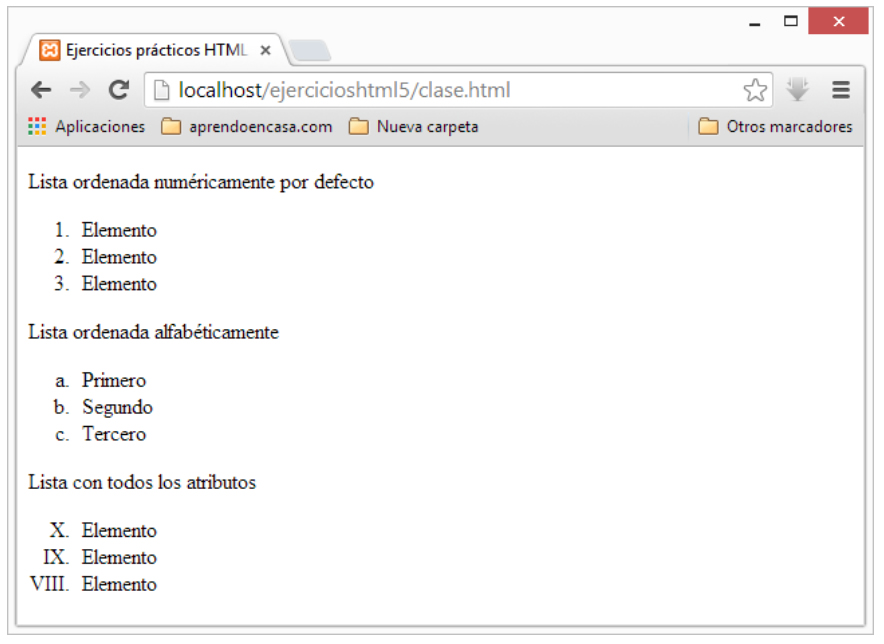

Etiquetas Semánticas (HTML)

Listas (HTML)

Enlaces (HTML)

Inicialmente podemos definir Semántica como algo perteneciente o relativo a la significación de las palabras. Esa es la definición de la Real Academia de la Lengua Española, y así de sencillo es entender este tipo de etiquetas del lenguaje HTML: Son aquellas que dan significado a las partes del documento.
Por decirlo de otra forma, estamos ante etiquetas que indican qué es el contenido que contienen, en lugar de cómo se debe formatear al mostrar el documento HTML en un cliente web.
Obtenido de: desarrolloweb.com Carrizo, León - España (Junio 2012)
Las listas ordenadas sirven también para presentar información, en diversos elementos o items, con la particularidad que éstos estarán predecidos de un número o una letra para enumerarlos, siempre por un orden.
Para realizar las listas ordenadas usaremos las etiquetas OL (ordered list) y su cierre. Cada elemento sera igualmente indicado por la etiqueta LI, que ya vimos en las listas desordenadas.
Del mismo modo que para las listas desordenadas, las listas ordenadas ofrecen la posibilidad de modificar el estilo. En concreto nos es posible especificar el tipo de numeración empleado eligiendo entre números (1, 2, 3...), letras (a, b, c...) y sus mayúsculas (A, B, C,...) y números romanos en sus versiones mayúsculas (I, II, III,...) y minúsculas (i, ii, iii,...).
Obtenido de: desarrolloweb.com Carrizo, León - España (Junio 2012)
Son los enlaces que se dirigen hacia páginas que se encuentran fuera de nuestro sitio web, es decir, cualquier otro documento que no forma parte de nuestro sitio. Generalmente nuestro sitio web estará en un dominio determinado, tipo example.com. Los enlaces remotos son los que van a páginas que estarían en otro dominio diferente.
Este tipo de enlaces es muy común y no representa ninguna dificultad. Simplemente colocamos en el atributo HREF de nuestra etiqueta A la URL o dirección de la página con la que queremos enlazar.
Obtenido de: desarrolloweb.com Carrizo, León - España (Junio 2012)